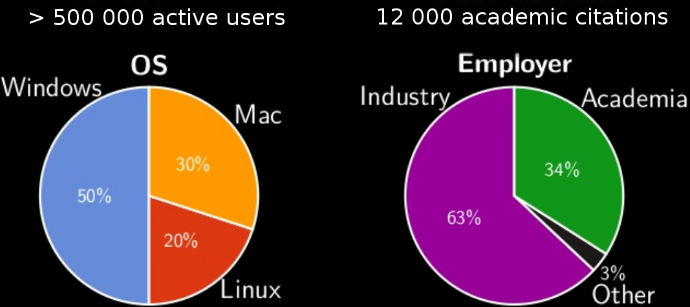
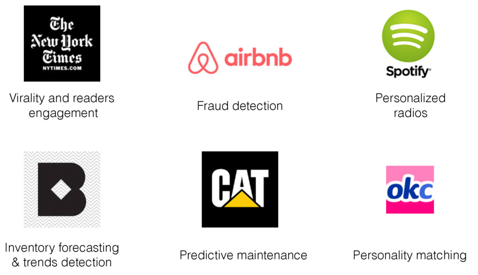
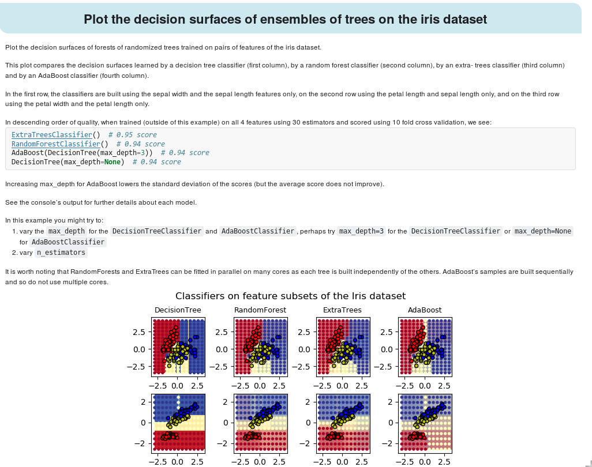
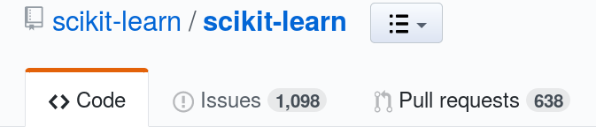

Enabling open science and data science via software: scikit-learn
Loïc Estève

About me

scikit-learn
scikit-learn vision: an enabler
Machine learning for everyone
High quality pythonic library
Community-driven development (BSD license)
Features
Users
Monthly website traffic
Users
Users (industry)
Users (academia)
Widely used in:
- brain data analysis
- astrophysics
- genomics
- etc …
0.20 release
Better support for data-science common use case:
missing values, categorical variables, heterogeneous data, and features/targets with unusual distributions)
ColumnTransformer, TransformedTargetRegressor, KBinsDiscretizer, …
See changelog
scikit-learn strengths
Easy to use:
from sklearn.svm import SVC
classifier = SVC()
svm.fit(X_train, y_train)
y_test = classifier.predict(X_test)
from sklearn.ensemble import RandomForestClassifier
classifier = RandomForestClassifier()
svm.fit(X_train, y_train)
y_test = classifier.predict(X_test)
Consistent API
Optimised for speed: Numpy and Cython
Great documentation: scikit-learn.org
Doc: gallery of examples

Doc: example
Doc: API documentation

Doc: user guide
Community
Contributors

Project activity
~50 notifications per day from comments on PRs/issues
User support drowns core devs
Reviewing PRs is the main bottleneck
Road and Bridges by Nadia Eghbal
scikit-learn contrib
http://contrib.scikit-learn.org
Not everything can (and has to) go in scikit-learn
For cutting-edge algorithms, quick development, maturation
nice template to start the project (testing, CIs, …) + visibility
requirements: follow the scikit-learn API, docs, tests
~10 projects in scikit-learn contrib currently
Funding (public)
A. Mueller (full time). Students M. Kumar, V. Birodkar Telecom Paris-Tech: 200 k€ WendelinIA grant + 12 k€ CDS
Programmers: T. Guillemot, T. Dupré. Students: M. Kumar, D. Sullivan, V.R. Rajagopalan, N. Goix Inria Parietal: 120 k€ Inria, + 100 k€ WendelinIA + 50 k€ ANR + 30 k€ CDS
Programmers: O. Grisel, L. Estève, G. Lemaître, J. Van den Bosche. Students: A. Mensch, J. Schreiber, G. Patrini
> 400 k€ / year
Funding (sponsors)
Scikit-learn foundation @ Inria launched in September 2018
companies: better visibility on software they rely on, good for Public Relations
scikit-learn: permanent staff to consolidate project, useful feed-back from advanced users
See Gaël Varoquaux's blog post
Python scientific stack

Someone else may solve your problems
One advantage of being part of the very dynamic Python ecosystemdask
 Low-level interfaces for parallel computing
Low-level interfaces for parallel computing

Other goodies:
- live diagnostic dashboard
- statistical profiler
Try dask in your browser via binder
dask integration in scikit-learn
from sklearn.ensemble import RandomForestClassifier
clf = RandomForestClassifier(n_estimators=200, n_jobs=-1)
clf.fit(X, y)
dask integration in scikit-learn
from sklearn.externals import joblib
from dask.distributed import Client
client = Client('scheduler-address')
clf = RandomForestClassifier(n_estimators=200, n_jobs=-1)
with joblib.parallel_backend("dask", scatter=[X, y]):
clf.fit(X, y)
dask-related projects
dask-ml: fit scikit-learn models on data bigger than RAM, or distribute scikit-learn on a cluster. Integration with xgboost.
dask-jobqueue smoothly transition your existing Python code from your machine to a HPC cluster (SLURM, PBS, etc …)
from dask_jobqueue import SLURMCluster
cluster = SLURMCluster()
cluster.scale(4) # 4 cores
from dask.distributed import Client
client = Client(cluster)
# dask generic code agnostic to the cluster
Similar packages for running dask on Kubernetes or on a Hadoop/Yarn cluster.
Summary
Versatile library: the right level of abstraction. Close to research, but seeking different tradeoffs
Numpy arrays as data containers. Fast enough.
Ensure code quality and maintainability